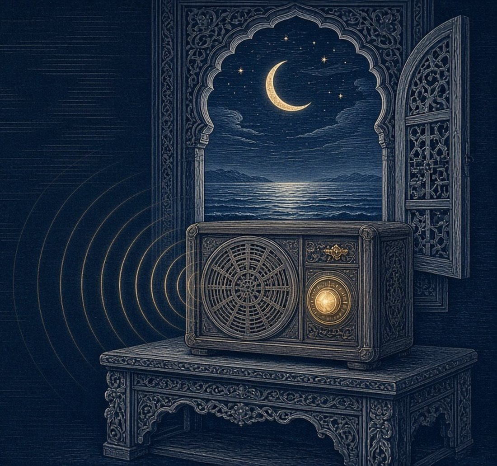

Radio en direct et préenregistrée
471 stations : 173 radios en direct et 298 Corans complets à écouter sourate par sourate, plus des tafsîrs, des livres et des traductions. Le même catalogue et les mêmes flux que la radio du bot Discord.

· classées de A à Z · touche un nom pour sa fiche, ▶ pour écouter, ★ pour l’ajouter à tes favoris (enregistrés sur cet appareil, sans compte).
Questions fréquentes
La radio est-elle gratuite ?
Le lecteur de cette page est un aperçu gratuit. La radio 24h/24 dans les bots est réservée aux abonnés Premium 💎 (essai gratuit de 7 jours). Voir les abonnements.
D’où viennent les flux ?
Ce sont exactement les flux utilisés par la radio du bot Discord BAYT AL-ILM بيت العلم : les radios en direct et les récitations complètes, sourate par sourate. Le lecteur du site et le bot partagent le même catalogue.
Comment écouter sur Discord ?
Rejoins le salon vocal Kholan Radio du serveur officiel : la radio y tourne 24h/24. Sur ton serveur, avec Premium 💎 : /radio start puis /radio switch pour changer de récitateur.
Où sont gardés mes favoris ?
Sur ton appareil (dans ton navigateur), sans compte. Sur Discord, ⭐ dans le menu /radio switch garde jusqu’à 10 stations favorites.
Pourquoi une station ne joue pas ?
Un flux peut être momentanément coupé à la source. Passe à la station suivante avec ⏭ ; la liste est vérifiée à chaque mise à jour du bot.
Le Coran complet continue-t-il tout seul ?
Oui : à la fin d’une sourate, la suivante démarre automatiquement. Choisis la sourate de départ dans le menu du lecteur.
Puis-je écouter sur mon téléphone, écran éteint ?
Pour l’aperçu, oui, dans la plupart des navigateurs mobiles : les commandes lecture, pause et piste suivante s’affichent aussi sur l’écran verrouillé.